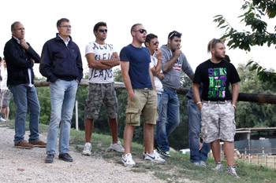
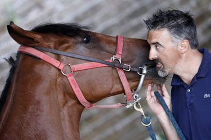

|


È ONLINE IL VIDEO DELLA CARRIERA!!!
Per ulteriori filmati, visitate il nostro canale su YouTube.
IL NICCHIO VINCE IL MASGALANO 2013

LEGGI LA PRESENTAZIONE DI DUCCIO BALESTRACCI
Il Masgalano 2013, realizzato da Laura Brocchi è stato vinto dalla Nobile Contrada del Nicchio.
La Commissione per l’assegnazione del Masgalano, presieduta da Gabriele Bartalucci, ha conferito l'ambito riconoscimento alla Nobile Contrada del Nicchio, dopo le due Carriere che hanno visto la sua comparsa distinguersi per eleganza, dignità di portamento e coordinamento durante la sfilata del Corteo Storico che precede il Palio. La preziosa opera in rame bagnato in argento, che risalta per la forte lucentezza, è stata offerta dal Comitato permanente degli Economi e realizzata dall’artista senese Laura Brocchi.
In essa, sono raffigurati simboli e richiami a tutte quelle attività organizzative e preparatorie alla Festa e alla Carriera che animano i popoli delle Contrade e riportano all’operosità degli Economi.
Questi i nomi dei rappresentanti delle Contrade nella Commissione del Masgalano: Gabriele Fattorini (Aquila), Francesco Carletti (Bruco), Paolo Petreni (Chiocciola) Antonio Dami (Civetta), Giovanni Sportoletti (Drago), Federico Neri (Giraffa), Emiliano Muzzi (Istrice), Paolo Lorenzoni (Leocorno), Gianmaria Marrucci (Lupa), Massimo Marzocchi (Nicchio), Alessandro Bianciardi (Oca), Fabio Massimo Castellani (Onda), Marco Ceccherini (Pantera), Luca Zanelli (Selva), Alessandro Passaponti (Tartuca), Marco Capannoli (Torre), Luca Braccini (Valdimontone).
I misuratori di bandiere e tamburi, per la Carriera dello scorso luglio: Aldo Giannetti (Valdimontone) e Andrea Cancelli (Onda); per quella di agosto: Armando Angiolini (Istrice) e Federico Melai (Drago).
Di seguito i punteggi riportati da ciascuna Contrada.
| classifica finale |
Nome della Contrada |
punteggio luglio |
punteggio agosto |
punteggio totale |
| 1 | NICCHIO | 339,5 | 342 | 681,5 |
| 2 | ISTRICE | 339 | 338 | 677 |
| 3 | LEOCORNO | 334,5 | 337 | 671,5 |
| 4 | CHIOCCIOLA | 339 | 330,5 | 669,5 |
| 5 | BRUCO | 333 | 335,5 | 668,5 |
| 6 | TORRE | 327 | 339 | 666 |
| 7 | LUPA | 319,5 | 343,5 | 663 |
| 8 | AQUILA | 324 | 336 | 660 |
| 9 | ONDA | 329,5 | 322 | 651,5 |
| 10 | VALDIMONTONE | 324 | 308 | 632 |
| 11 | GIRAFFA | 316 | 311 | 627 |
| 12 | SELVA | 326 | 289,5 | 615,5 |
| 13 | TARTUCA | 322 | 291,5 | 613,5 |
| 14 | OCA | 291,5 | 318,5 | 611 |
| 15 | PANTERA | 303 | 304 | 607 |
| 16 | DRAGO | 304 | 295 | 599 |
| 17 | CIVETTA | N.C. * | 323 | 323 |
* Punteggio non assegnato per la partecipazione al Corteo Storico senza il soprallasso.
I FILMATI DEL GIUBILO DELLA CONTRADA CAPITANA DELL'ONDA
ECCO I NOSTRI FILMATI DI MOROSITA PRIMA!!!
Cliccate qua sotto sul link e vedrete i filmati girati dallo Staff del nostro sito, in esclusiva, dedicati al cavallo vittorioso, MOROSITA PRIMA (i filmati si riferiscono ad una precedente partecipazione del cavallo e quindi i colori non appartengono alla Contrada vittoriosa di stasera).
IL SONETTO DI BEPPE PALLINI
Dopo il Palio
S'ha a dì qualcosa anche stavolta? Ovvia,
cominciamo col dì cose evidenti.
Meglio di tutti ha fatto Tittia,
so' pochini davvero i precedenti,
fantini col cappotto, a mente mia,
si contan su le dita e pretendenti
a questo Palio un mancavano mia,
tutte impegnate e tutte perdenti.
Nicchio, Chiocciola, Lupa specialmente,
coll'Aquila, è un bel po' che so' a digiuno
e 'l Palio lo volevan fortemente.
E la Torre ripiange un'altra volta:
coll'Oca e l'Onda un Palio per uno,
è stata un'annataccia proprio storta!
17 Agosto 2013


CURIOSITA' SULLA CARRIERA DEL 16 AGOSTO 2013
- L'Onda ha rivinto dopo 300 anni esatti, ma nel 1713 il Palio le venne consegnato l'11 di settembre.

- Al capitano dell'Onda porta bene correre con cavalli alla loro terza esperienza paliesca. Nel 2012 e nel 2013 entrambi i soggetti vinsero dopo aver fallito i primi due Palii.
- L'Onda vince un Palio le cui partecipanti erano le stesse di quello corso il 2 aprile 1739. In quell'occasione vinse il Bruco.
- L'Onda non vinceva il palio di agosto dal 1985.
- E' la quinta volta che si registra l'accoppiata Oca-Onda nel corso di un anno: L'ultima volta fu nel 1985.
- Quella del 16 agosto 2013 è stata la 12ª caduta di Trecciolino durante una carriera.
- Prima d'ora, Tittia aveva sempre vinto nell'Oca e sempre di Luglio.
- La Lupa non era mai stata più di 24 anni senza vincere.
- Considerando i Palii corsi dal 1945, il Nicchio conduce una curiosa classifica: è la 13ª volta che giunge secondo.
- Entrambi i cavalli giunti secondi nel 2013 erano scossi.
- E' la prima volta che Morosita Prima finisce la corsa senza aver disarcionato il proprio fantino.
- Su 14 Palii disputati in questo secolo in agosto, ben 7 volte hanno vinto contrade estratte a sorte.
VINCE L'ONDA. CORSA FANTASTICA PER TITTIA SU MOROSITA PRIMA
Esulta il popolo di Malborghetto con il suo quarantesimo Palio vinto
L'Onda è volata sul tufo. E' finita la spasmodica attesa che ha caratterizzato questi quattro giorni. Giovanni Atzeni, detto Tittia su Morosita Prima (una femmina baio oscuro di 8 anni), ha portato la vittoria al popolo di Malborghetto. Per Tittia è il quarto Palio vinto, per l'Onda il quarantesimo.
Oca, Bruco, Onda, Lupa, Tartuca, Torre, Nicchio, Aquila e Chiocciola si sono allineate fra i canapi, con la Selva di rincorsa, mentre il sole, infuocato, lambiva ancora gli antichi palazzi di Piazza del Campo. Un meraviglioso catino umano che ha atteso per ore guardando sfilare la storia di Siena e con questa l'antica passione per una corsa che è stata definita "dell'anima".
A nulla è servito il guizzo della Lupa inseguita dall'Oca, Tartuca e Nicchio.
Alla prima curva del Casato l'Onda era già in terza posizione, quando vi girerà la seconda volta è in testa. Vi resterà fino alla fine inseguita, invano, dal Nicchio e dalla Torre. Tittia ha fatto "cappotto", vista la vittoria riportata lo scorso luglio con il giubbetto dell'Oca.
Tre giri, in bilico tra sogno e realtà, mentre il cuore pulsava impazzito e il cervello cercava di anticipare l'esito. Sbaragliate le previsioni. Ancora una volta. Nessuna novità: è il Palio di Siena. Qui è il fato a giocare la mossa vincente. Al di là degli accordi tra fantini, al di là delle strategie, minuziosamente pianificate dalle dirigenze contradaiole, al di là della bravura, sia del fantino sia del cavallo. La sorte è la magica incognita e regna sovrana su tutto ciò che è materia.
La corsa è finita. Il cavallo vittorioso viene abbracciato e baciato, come l'uomo che lo ha condotto al galoppo. Tutta la Contrada si è stretta, in un abbraccio di bandiere, ai due vincitori per poi recarsi in Duomo a ringraziare la Madonna assunta in cielo, patrona e regina di Siena, alla quale viene dedicato il Palio di mezz'agosto. Con loro il drappellone, dipinto da Cesare Olmastroni e Cecilia Rigacci, l'ambito premio per il quale sono state versate lacrime di gioia in un gioco senza tempo disputato, due volte all'anno, in questa città capace, come nessun'altra, di tenere le sue tradizioni strettamente intrecciate al presente per poterle, così, lasciare al futuro.
Il Palio adesso è finito. Rimangono i festeggiamenti dell'Onda. Nel rione bianco celeste sarà festa per giorni e giorni. Tutti a ricordare, tutti a rivivere, nel replay della memoria, quel momento di gloria proprietà di un solo popolo, ma vissuto da tutta la città.
È PALIO!!! LE AVVERTENZE PER ENTRARE IN PIAZZA
Ci siamo! Alle ore 16,50 il drappello dei Carabinieri a cavallo entra in Piazza e da allora in poi comincia la Passeggiata Storica che ci porterà in tre ore scarse a cambiare la Storia di Siena e del Palio. Le Contrade adesso soffrono, Sunto sta battendo i rintocchi. Quei rintocchi che per ogni senese e Contradaiolo entrano dalle orecchie e riescono a passarti nello stomaco sbucando poi al cuore che batte.
È PALIO!!!
Gli aggiornamenti del nostro sito saranno (quasi) in tempo reale!!! Lasciateci il tempo di tornare da Piazza, cambiarci la maglietta e saremo di nuovo qui da voi con i poderosi lavori di aggiornamento al nostro sito.
Questa notte (o molto più probabilmente domattina) i filmati del Giubilo saranno online sul nostro canale YouTube.
Le raccomandazioni per entrare in piazza le lasciamo a questo filmato che abbiamo girato en passant qualche ora fa...
Ciao, a più tardi...
L’ONDA HA VINTO LA PROVACCIA

La Contrada dell’Onda ha vinto la provaccia del Palio di agosto, che si è corsa questa mattina.
L'ordine d'ingresso ai canapi per la Provaccia è inverso a quello di ieri sera della Prova Generale. Ecco qiuindi l'ingresso ai canapi:
OCA - Osvaldo, montato da Francesco Caria, detto Tremendo
SELVA - Nicolas de Pedra Ulpu, montato da Luca Minisini, detto Dè
NICCHIO - Oppio, montato da Luigi Bruschelli, detto Trecciolino
AQUILA - Naikè, montata da Giuseppe Zedde, detto Gingillo
TORRE - Polonski, montato da Alessio Migheli, detto Girolamo
BRUCO - Mocambo, montato da Antonio Siri, detto Amsicora
TARTUCA - Porto Alabe, montato da Sebastiano Murtas, detto Grandine
CHIOCCIOLA - Phalena, montata da Silvano Mulas, detto Voglia
ONDA - Morosita Prima, montata da Giovanni Atzeni, detto Tittia
e di rincorsa
LUPA - Lo Specialista, montato da Jonathan Bartoletti, detto Scompiglio
LA MESSA DEL FANTINO

L'Arcivescovo di Siena, mons. Antonio Buoncristiani, ha celebrato la tradizionale messa del fantino alla presenza di tutti i fantini che correranno il Palio nel tardo pomeriggio e dei dirigenti di Contrada. Come sempre la cittadinanza ha potuto partecipare a questa celebrazione che costituisce uno dei momenti più intimi e toccanti di tutto il rituale paliesco.
LA CHIOCCIOLA HA VINTO LA PROVA GENERALE
L'ordine d'ingresso ai canapi, per la Prova Generale, prevede, da regolamento, che si prenda l'ordine avuto dai cavalli per procedere alla loro assegnazione. Ecco qiuindi l'ingresso ai canapi di stasera:
LUPA - Lo Specialista, montato da Jonathan Bartoletti, detto Scompiglio
ONDA - Morosita Prima, montata da Giovanni Atzeni, detto Tittia
CHIOCCIOLA - Phalena, montata da Silvano Mulas, detto Voglia
TARTUCA - Porto Alabe, montato da Sebastiano Murtas, detto Grandine
BRUCO - Mocambo, montato da Antonio Siri, detto Amsicora
TORRE - Polonski, montato da Alessio Migheli, detto Girolamo
AQUILA - Naikè, montata da Giuseppe Zedde, detto Gingillo
NICCHIO - Oppio, montato da Luigi Bruschelli, detto Trecciolino
SELVA - Nicolas de Pedra Ulpu, montato da Luca Minisini, detto Dè
e di rincorsa
OCA - Osvaldo, montato da Francesco Caria, detto Tremendo
A FERRAGOSTO SI CORRE LA PROVA GENERALE
Sale la tensione, lentamente, in città. Gli staff Palio delle 10 Contrade che corrono, operano freneticamente per organizzare al meglio la Carriera dell'Assunta. I popoli sono in trepidante attesa, nella speranza che il "cittino" (così come viene affettuosamente chiamato il drappellone) giunga nella propria Contrada vittoriosa.
Come da tradizione la sera del 15 agosto si corre in Piazza del Campo la quinta prova, più nota col nome di Prova Generale. L'ordine d'ingresso ai canapi è previsto in base all'ordine avuto dai cavalli per procedere alla loro assegnazione del 13 agosto scorso. Lo scoppio del mortaletto è previsto alle ore 19, come l'inizio della Carriera del 16.
Come da tradizione, la Prova Generale impegnerà anche il drappello di Carabinieri a cavallo che correrà con la spada sguainata.
Lo Staff del nostro sito ilpalio.org coglie l'occasione per rivolgere un caloroso saluto ai Carabinieri a cavallo ed a tutte le Forze dell'Ordine che vigileranno, come ogni anno, sulla sicurezza della nostra amata città.

A FERRAGOSTO RAI 1 HA TRASMESSO
IL FILM "LA RAGAZZA DEL PALIO"
Nel pomeriggio della giornata di Ferragosto RAI 1 ha trasmesso il film "La ragazza del Palio", lungometraggio del 1957 diretto da Luigi Zampa e con Vittorio Gassman nel ruolo del Capitano della Nobile Contrada dell'Aquila e Diana Dors nel ruolo della fantina "Diavola" che nella finzione del film corre e vince il Palio per la Contrada della Chiocciola.
Per ulteriori informazioni, nel nostro sito è già presente la scheda del film. Potete consultarla cliccando qua sotto sulla foto:

Non appena sarà disponibile (presumibilmente nel corso della mattinata di domani), pubblicheremo il link al film da RAI REPLAY. Avrete così la possibilità di rivedere il film nella modalità "on demand", per una settimana a partire da oggi.
IL METEO GARANTISCE STABILITA' PER LO SVOLGIMENTO DELLA CARRIERA DELL'ASSUNTA
Il sole sorge alle 06:20 e tramonta alle 20:17. Altezza massima 60.6° alle 13:19.
Previsione per Venerdì 16 Agosto
Stato del cielo e fenomeni: sereno o poco nuvoloso.
Venti: deboli da nord est in rotazione nel pomeriggio da nord ovest sulla costa e sull'Arcipelago, fino a moderati.
Temperature: comprese tra i 17°C della notte (temperatura percepita di 17°C) ed i 31°C del pomeriggio (temperatura percepita di 29°C). Al mattino la temperatura sarà di 29°C (temperatura percepita di 29°C).

METEO SIENA
IL DRAPPELLONE IN DUOMO
Si è svolta ieri pomeriggio la tradizionale Processione dei Ceri che ha visto il drappellone giungere in Duomo per la benedizione dell'Arcivescovo di Siena, mons. Antonio Buoncristiani e per l'omaggio da parte di tutte e 17 le Contrade di Siena. Ecco il video che il nostro staff ha girato ieri.
GLI OSPITI DEL COMUNE AL PALIO
Come di consueto, la nostra città ospiterà VIP e personaggi famosi. Gli ospiti del Comune di Siena sono numerosi. Vediamo chi saranno:
- On. Susanna Cenni
- Dott. Alessandro Cosimi – Sindaco di Livorno e Presidente ANCI Toscana
- Dott. Alfredo De Girolamo – Presidente Confservizi CISPEL
- On. Luca Sani – Presidente della Commissione Agricoltura della Camera dei Deputati
- Sig. Pawan Munjal – Presidente Hero Moto Corp (India)
- Sig. Davide Brivio – Team manager Suzuki
- Sig. Stefano Giovannelli – Direttore di Toscana Promozione
- On. Enzo Rivellini – Parlamentare europeo
- Sig. Emmanuel Hoog – Presidente dell’Agenzia di Stampa Nazionale "France Presse"
- Sig. Giuseppe Fanfani – Sindaco di Arezzo
- Sig. Federico Borgna – Sindaco di Cuneo
- S.E. Leonidas S. Markides – Ambasciatore della Repubblica di Cipro in Italia
- Dott. George Phellas – Console della Repubblica di Cipro a Perugia
- S.E. Seynabou Badiane – Ambasciatore del Senegal in Italia
- Dott. Abdoul Mbaye – Primo Ministro del Governo del Senegal
- Gen. Div. Rosario Castellano – Capo di Stato Maggiore del Comando NRDC (NATO)
- Gen. Div. Robert Byron – Vice Comandante Comando NRDC (NATO)
- Sig. Alberto Sironi – Regista della serie televisiva “Commissario Montalbano”
- Gen. Mennato Possemato – Comandante del Comando Operativo Aeronavale della Guardia di Finanza
- Sig. Jacques Brunel – Commissario Tecnico della Nazionale Italiana di Rugby
- Sig. Gino Troiani – General Manager della Nazionale Italiana di Rugby
- Sig. Marzio Innocenti – ex giocatore e capitano della squadra Nazionale Italiana di Rugby
Un saluto di benvenuto a tutti gli ospiti da parte della nostra redazione e dell'intera città.

IL PALIO SU RAI 5
La diretta integrale nazionale della RAI - Radiotelevisione Italiana del Palio dell'Assunta 2013 sarà trasmessa senza interruzioni, né salti di rete non su RAI 2, ma sul nuovo canale digitale RAI 5 (in Toscana la numerazione è il canale 23). La trasmissione inizierà, come ogni anno, alle ore 18,15. Condurranno Susanna Petruni e Maurizio Bianchini per la regia di Riccardo Domenichini.
Per quanto riguarda la Toscana il Palio sarà visibile in diretta anche nei canali del digitale terrestre di Siena TV e Canale 3 Toscana (la numerazione varia a seconda delle province). Ovviamente lo streaming online consentirà la visione da tutte le parti del mondo ed a tale proposito, in cima a questa pagina, abbiamo inserito il link diretto allo streaming di Siena TV. Cliccate qua sotto sul simbolo di RAI 5 per accedere comunque allo streaming online del canale RAI (funziona solamente in Italia).

IL NICCHIO HA VINTO LA QUARTA PROVA
Si presentano ai canapi le Contrade in ordine inverso rispetto a ieri sera. Nessun problema per l'Oca che, ieri sera, aveva solo perduto un ferro al posteriore sinistro. Mossa veloce e bella partenza della Torre con Polonski, montato da Alessio Migheli, detto Girolamo. Buona partenza anche dell'Onda. Il primo giro è appannaggio della Torre, ma Nicolas de Pedra Ulpu, montato da Luca Minisini, detto Dè al termine del primo giro sorpassa la Torre. Al secondo giro si fa vedere il Bruco con Mocambo, montato da Antonio Siri, detto Amsicora, mentre il terzo giro prova un bel San Martino e il Casato il Nicchio con Oppio, montato da Luigi Bruschelli, detto Trecciolino, che va a vincere sul mortaletto.
Ecco l'ingresso ai canapi:
TORRE - Polonski, montato da Alessio Migheli, detto Girolamo
CHIOCCIOLA - Phalena, montata da Silvano Mulas, detto Voglia
BRUCO - Mocambo, montato da Antonio Siri, detto Amsicora
NICCHIO - Oppio, montato da Luigi Bruschelli, detto Trecciolino
TARTUCA - Porto Alabe, montato da Sebastiano Murtas, detto Grandine
ONDA - Morosita Prima, montata da Giovanni Atzeni, detto Tittia
LUPA - Lo Specialista, montato da Jonathan Bartoletti, detto Scompiglio
SELVA - Nicolas de Pedra Ulpu, montato da Luca Minisini, detto Dè
OCA - Osvaldo, montato da Francesco Caria, detto Tremendo
e di rincorsa
AQUILA - Naikè, montata da Giuseppe Zedde, detto Gingillo
L'AQUILA HA VINTO LA TERZA PROVA
L'ordine d'ingresso ai canapi, per la terza prova, prevede, da regolamento, che si prenda l'ordine di assegnazione dei cavalli alle COntrade. Ecco quindi l'ingresso ai canapi:
AQUILA - Naikè, montata da Giuseppe Zedde, detto Gingillo
OCA - non ha partecipato alla prova, per la perdita di un ferro dalla zampa posteriore sinistra durante
l'allineamento al canape.
SELVA - Nicolas de Pedra Ulpu, montato da Luca Minisini, detto Dè
LUPA - Lo Specialista, montato da Jonathan Bartoletti, detto Scompiglio
ONDA - Morosita Prima, montata da Giovanni Atzeni, detto Tittia
TARTUCA - Porto Alabe, montato da Sebastiano Murtas, detto Grandine
NICCHIO - Oppio, montato da Luigi Bruschelli, detto Trecciolino
BRUCO - Mocambo, montato da Antonio Siri, detto Amsicora
CHIOCCIOLA - Phalena, montata da Silvano Mulas, detto Voglia
e di rincorsa
TORRE - Polonski, montato da Alessio Migheli, detto Girolamo
LA LUPA NON VINCE IL PALIO DI AGOSTO DAL 1948
La Lupa è la contrada che non vince ad agosto da maggior tempo, ossia dal 1948. Seguono: Oca 1977, Onda 1985, Aquila 1988, Nicchio 1998, Chiocciola 1999, Torre 2005, Selva 2006, Bruco 2008, Tartuca 2010.
LA CHIOCCIOLA HA VINTO LA SECONDA PROVA
Si presentano ai canapi le Contrade in ordine inverso rispetto a ieri sera. Cambio di monta per la Contrada della Selva che fa montare Luca Minisini, detto Dè su Nicolas de Pedra Ulpu. Mossa falsa al primo ingresso tra i canapi. Il Bruco e la Chiocciola forzano lievemente il canape e il mossiere Bartolo Ambrosione reagisce con tempestività. Al secondo ingresso della Lupa al canape tutto bene e si parte. Partono bene la Selva, la Tartuca, e l'Aquila. Al primo giro la Tartuca con Porto Alabe e Sebastiano Murtas, detto Grandine conducono con grande agilità e slancio, successivamente va a condurre l'Oca con Francesco Caria, detto Tremendo e Osvaldo. L'ultimo giro è appannaggio della Chiocciola con Silvano Mulas, detto Voglia e Phalena, che vanno a vincere questa seconda prova dagli spunti decisamente più interessanti per tutti. Ecco l'ordine d'ingresso ai canapi:
SELVA - Nicolas de Pedra Ulpu, montato da Luca Minisini, detto Dè
TARTUCA - Porto Alabe, montato da Sebastiano Murtas, detto Grandine
ONDA - Morosita Prima, montata da Giovanni Atzeni, detto Tittia
OCA - Osvaldo, montato da Francesco Caria, detto Tremendo
NICCHIO - Oppio, montato da Luigi Bruschelli, detto Trecciolino
AQUILA - Naikè, montata da Giuseppe Zedde, detto Gingillo
CHIOCCIOLA - Phalena, montata da Silvano Mulas, detto Voglia
BRUCO - Mocambo, montato da Antonio Siri, detto Amsicora
TORRE - Polonski, montato da Alessio Migheli, detto Girolamo
e di rincorsa
LUPA - Lo Specialista, montato da Jonathan Bartoletti, detto Scompiglio
LA SELVA HA VINTO LA PRIMA PROVA

Nicolas de P. Ulpu
La Contrada della Selva ha vinto la prima prova del Palio di luglio. Mossa abbastanza rapida e mossiere che, finalmente, non ha chiamato le Contrade alla spicciolata, ma una per una e "con calma", come dice lui. In partenza si mettono in luce la Contrada della Lupa, della Chiocciola e quella dell'Aquila, dopodiché i fantini tendono a frenare i cavalli e vince la Selva nel torpore generale della Piazza. Questo l'ordine d'ingresso tra i canapi:
LUPA - Lo Specialista, montato da Jonathan Bartoletti, detto Scompiglio
TORRE - Polonski, montato da Alessio Migheli, detto Girolamo
BRUCO - Mocambo, montato da Antonio Siri, detto Amsicora
CHIOCCIOLA - Phalena, montata da Silvano Mulas, detto Voglia
AQUILA - Naikè, montata da Giuseppe Zedde, detto Gingillo
NICCHIO - Oppio, montato da Luigi Bruschelli, detto Trecciolino
OCA - Osvaldo, montato da Francesco Caria, detto Tremendo
ONDA - Morosita Prima, montata da Giovanni Atzeni, detto Tittia
TARTUCA - Porto Alabe, montato da Sebastiano Murtas, detto Grandine
e di rincorsa SELVA - Nicolas de Pedra Ulpu, montato da Alberto Ricceri. detto Salasso
LE ENTRATE TRA I CANAPI DURANTE LE PROVE
C'è un ordine tradizionale con cui le Contrade prendono posto tra i canapi
durante le prove e quest'ordine viene dettato dall'art.62 del Regolamento del Palio.
Prima prova:
Ordine nel quale le Contrade furono estratte a sorte per partecipare al Palio.
Seconda prova:
Ordine suddetto invertito.
Terza prova:
Ordine d'estrazione della Contrada per l'assegnazione dei cavalli.
Quarta prova:
Ordine suddetto invertito.
Quinta prova:
Ordine avuto dai cavalli per procedere alla loro assegnazione.
Sesta prova:
Ordine suddetto invertito.
L'ASSEGNAZIONE DEI CAVALLI
Quattro nuovi soggetti: Phalena, Polonski, Oppio ed Osvaldo.
Un solo cavallo già vincitore di un Palio: Lo Specialista con 5 partecipazioni. Due cavalli hanno già preso parte a due Palii ( Mocambo e Morosita Prima). Tre cavalli hanno disputato già un Palio ( Porto Alabe, Naikè e Nicolas de Pedra Ulpu).
Per ulteriori informazioni, cliccate sui due link qua sotto:
- I CAVALLI DEL 2000 -
- I CAVALLI PIU' FEDELI -
CONFERENZA STAMPA DEL SINDACO E DEI VETERINARI DEL COMUNE

Nel pomeriggio del 13 agosto il neosindaco di Siena, Bruno Valentini, ha tenuto una conferenza stampa insieme ai cinque veterinari del Comune di Siena. Lo scopo dell'incontro con la stampa e i media TV ha avuto come fulcro della discussione le recenti polemiche sulla scelta dei cavalli per le prove di notte e per la tratta.
Fatte salve le prerogative e la competenza ormai decennale dello Staff medico comunale, il Sindaco Valentini ha voluto ribadire l'impegno di tutta l'organizzazione, ai fini di preservare nel miglior modo la Festa dei Senesi.
Proprio ieri si è svolta una riunione con i proprietari dei cavalli del Palio che ha dato i frutti sperati di una composizione delle polemiche che si erano diffuse sulla mancata scelta di alcuni soggetti ritenuti "imprescindibili".
I veterinari hanno sottolineato la grande vivacità dei proprietari di cavalli ed hanno dato loro atto del grande sforzo che stanno facendo per far crescere una generazione di cavalli da Palio che sta dando ottimi risultati.
Come sappiamo, infatti, mentre l'ippica negli ippodromi è allo sbando, qui a Siena si registra un'insperata vitalità e proprio per questa ragione i soggetti iscritti alle previsite erano talmente tanti che si è dovuta operare una scelta per le prove di notte.
Da un lato, quindi, la criticata decisione di mandare alcuni cavalli direttamente alla Tratta senza passare dalle prove di notte è stata dettata dall'esigenza di preservare i cavalli dallo stress ed anche, in ultima analisi, la pista di tufo.
Il criterio del "serio impegno" che viene valutato dai veterinari, sulla base di una scala graduata ben precisa, riguarda i soggetti totalmente nuovi. Al contrario, i cavalli mandati direttamente alla Tratta sono già stati valutati almeno una volta nell'anno in corso. Com'è giusto che sia le scelte finali spettano sempre ai Capitani delle Contrade partecipanti alla Carriera.
Ci si consenta di dire che, alla fine dei giochi, il risultato della Tratta di oggi non fa una piega: abbiamo infatti un lotto di cavalli abbastanza ben rodato, con sei cavalli che hanno già partecipato ad almeno una Carriera e quattro esordienti di livello. Anche a luglio le polemiche non sono mancate e poi abbiamo visto cavalli esordienti che hanno fatto faville.
Il Sindaco ha comunque specificato che fin da settembre ci saranno nuovi incontri con le COntrade per riconfermare e/o migliorare il protocollo equino vigente.
SONO 32 I SOGGETTI PRESENTATI ALLA TRATTA
(Nell'ordine: numero, nome cavallo, proprietario)
1 BONGO BINGO Giancarlo Rossi
2 GIRA E RIGIRA Marco Sampieri
3 GUSCHIONE Simone Berni
4 LO SPECIALISTA Fabio Fioravanti
5 MAC GYVER Tamara Rosi
6 MARROCULA Alessandro Favilli
7 MOCAMBO Mark Harris Getty
8 MORESU Fabio Fioravanti
9 MOROSITA PRIMA Carolina Tacconi
10 NAIKE’ Simone Picchi
11 NESSIE Niccolino Floris
12 NICOLAS DE PEDRA ULPU Mark Harris Getty
13 NOIOSO Andrea Marchese
14 NOTTAMBULO Mattia Marchetti
15 NOVANTA Enzo Vannini
16 NOVERRE Augusto Posta
17 OCCOLE’ Alberto Manenti
18 OCEANO BAIO Elisabetta Ferrini
19 ONEGLIA DE OZIERI Luca Francesconi
20 OPERA RARA Massimiliano Fabbri
21 OPPIO Giusliano Brandini
22 OSVALDO Roberto Danesi
23 OTTIGLIA Gianpaolo Toscano
24 OVERJOYED Martina Zini
25 PACIFICA Luca Veneri
26 PECCATRICE Simone Berni
27 PERREDDA Marco Sampieri
28 PHALENA Massimo Milani
29 PITZULU Mario Savelli
30 POLONSKI Mark Harris Getty
31 PORTO ALABE Fabrizio Brogi
32 SARATOG Marco Grazzini
I soggetti col nome sottolineato sono quelli che hanno già corso almeno una Carriera (cliccandoci sopra, si aprirà la relativa scheda del cavallo).
Su 32 soggetti, sono ben 23 quelli che non hanno mai corso un Palio. Cinque sono i cavalli che hanno corso 1 Palio ( Guschione, Naikè, Nicolas de Pedra Ulpu, Nottambulo e Porto Alabe). Tre sono i cavalli che hanno corso 2 Palii ( Marrocula, Mocambo e Morosita Prima). Un solo cavallo può essere considerato esperto, avendo corso 5 Palii ( Lo Specialista).
SONO 32 I SOGGETTI PRESENTATI ALLA TRATTA
(Nell'ordine: numero, nome cavallo, proprietario)
1 BONGO BINGO Giancarlo Rossi
2 GIRA E RIGIRA Marco Sampieri
3 GUSCHIONE Simone Berni
4 LO SPECIALISTA Fabio Fioravanti
5 MAC GYVER Tamara Rosi
6 MARROCULA Alessandro Favilli
7 MOCAMBO Mark Harris Getty
8 MORESU Fabio Fioravanti
9 MOROSITA PRIMA Carolina Tacconi
10 NAIKE’ Simone Picchi
11 NESSIE Niccolino Floris
12 NICOLAS DE PEDRA ULPU Mark Harris Getty
13 NOIOSO Andrea Marchese
14 NOTTAMBULO Mattia Marchetti
15 NOVANTA Enzo Vannini
16 NOVERRE Augusto Posta
17 OCCOLE’ Alberto Manenti
18 OCEANO BAIO Elisabetta Ferrini
19 ONEGLIA DE OZIERI Luca Francesconi
20 OPERA RARA Massimiliano Fabbri
21 OPPIO Giusliano Brandini
22 OSVALDO Roberto Danesi
23 OTTIGLIA Gianpaolo Toscano
24 OVERJOYED Martina Zini
25 PACIFICA Luca Veneri
26 PECCATRICE Simone Berni
27 PERREDDA Marco Sampieri
28 PHALENA Massimo Milani
29 PITZULU Mario Savelli
30 POLONSKI Mark Harris Getty
31 PORTO ALABE Fabrizio Brogi
32 SARATOG Marco Grazzini
I soggetti col nome sottolineato sono quelli che hanno già corso almeno una Carriera (cliccandoci sopra, si aprirà la relativa scheda del cavallo).
Su 32 soggetti, sono ben 23 quelli che non hanno mai corso un Palio. Cinque sono i cavalli che hanno corso 1 Palio ( Guschione, Naikè, Nicolas de Pedra Ulpu, Nottambulo e Porto Alabe). Tre sono i cavalli che hanno corso 2 Palii ( Marrocula, Mocambo e Morosita Prima). Un solo cavallo può essere considerato esperto, avendo corso 5 Palii ( Lo Specialista).
LA MATTINA DELL'11 AGOSTO SI SONO SVOLTE LE COSIDDETTE "PROVE DI NOTTE"

Le prove di notte sono terminate da poco in una Piazza del Campo gremita. Tante persone sia sui palchi che davanti all’entrone, dove l’argomento principale era ovviamente l’esclusione da parte dei veterinari dei 4 big scartati dopo le previsite. Veterinari che, per evitare dichiarazioni o chissà cos’altro, erano stati posizionati nel terrazzino di Palazzo Berlinghieri, una location insolita e assolutamente curiosa. Chissà quali rischi avrebbero potuto correre se fossero rimasti a seguire le prove di notte come di consueto davanti all’entrone. Misteri che non troveranno mai una spiegazione logica, intanto una spiegazione è proprio quello che si attendono i proprietari (almeno alcuni di loro) dei 4 big scartati, che dopo mille polemiche questo pomeriggio verranno ricevuti dalla commissione veterinaria per ricevere le motivazioni, a loro dire inesistenti, dell’esclusione dei propri barberi.
Parlando delle batterie di questa mattina, invece, c’è poco da dire se non che in molti hanno rispettato il serio impegno richiesto dal Comune. Alberto Ricceri, sempre sorprendente e innovativo nelle sue manifestazioni, si è presentato con la Go-Pro, una telecamera per sport estremi appartenente ad un suo ex compagno di scuola (presente nell’entrone) cha ha ripreso tutte le fasi delle batterie in cui Salasso ha montato. Sempre molto attivo Scompiglio, così come Dino Pes, Antonio Siri e Sebastiano Murtas, presenti in almeno 4 batterie delle 7 in programma. Adesso si attende solamente la valutazione dei veterinari, che in tarda mattinata dovrebbero diramare la lista dei soggetti che domani mattina faranno compagnia ai 15 “esperti” ammessi direttamente alla tratta.
PRESENTATO IL DRAPPELLONE DIPINTO A DUE FACCE
DA CESARE OLMASTRONI E CECILIA RIGACCI

Nel Cortile del Palazzo Pubblico, alle ore 19, è stato presentato il drappellone che andrà in palio alla Contrada vincitrice, la sera del 16 agosto.
Il nuovo sindaco Bruno Valentini ha paragonato il drappellone "double-face" ad una medaglia con due facce distinte e che, come due facce della stessa medaglia, riconducono ad una sintesi artistica, religiosa e concettuale che si rifanno al momento storico che sta vivendo Siena in questo periodo.
Una Vergine Maria sinuosa e vestita da un drappo dorato che riproduce i luoghi della città di Siena si staglia su un fondo celeste nella parte dipinta dal maestro Olmastroni, che non ha dipinto gli stemmi delle Contrade, ma ha voluto caratterizzare il suo Palio con i luoghi più significativi di ognuna delle dieci Contrade che prenderanno parte alla Carriera.
La parte dipinta dalla maestra Cecilia Rigacci, invece si rifa alla tradizione più pura, perché il centro della rappresentazione è proprio un'importante offerta votiva alla Vergine, un momento di preghiera in cui la città tutta riflette sulle proprie potenzialità e riprende in mano il proprio destino, difendendo e curando ciò che ha di più caro.
Successivamente ha preso la parola la Prof.ssa Margherita Anselmi Zondadari, storica dell'arte dell'Università di Siena, che ha illustrato più nel dettaglio l'iconografia alla base del drappellone che vedremo in Piazza venerdì prossimo.
CLICCATE QUA SOTTO
sul drappellone e per vederlo ad alta risoluzione.
SONO 57 I CAVALLI AMMESSI ALLE PROVE MATTUTINE E 15 QUELLI CHE VANNO DIRETTAMENTE ALLA TRATTA
 
Di seguito ecco l’elenco dei cavalli ammessi alle prove mattutine di addestramento che si svolgeranno lunedì prossimo 12 agosto, alle ore 6, e di quelli che sono stati ammessi direttamente alla Tratta che si terrà la mattina successiva. (Nell'ordine: numero, nome cavallo, proprietario).
CAVALLI AMMESSI ALLE PROVE MATTUTINE DI ADDESTRAMENTO DEL 12 AGOSTO
1 BOMARIO DA CLODIA Carlo Brocci
2 BOWILDE DA CLODIA Francesco Ticci
3 GUSCHIONE Simone Berni
4 MAC GYVER Tamara Rosi
5 MORESU Fabio Fioravanti
6 NACHISO BELLU Alessio Tanchi
7 NANNEDDU MEU Alberto Ricceri
8 NESSIE Niccolino Floris
9 NOIOSO Andrea Marchese
10 NOTTAMBULO Mattia Marchetti
11 NOVANTA Enzo Vannini
12 NOVERRE Augusto Posta
13 O’ SOLE MIO BELLO Egisto Giuseppe Galeazzi
14 OCEANO BAIO Elisabetta Ferrini
15 ODORICO Alessandro Tozzi
16 OFFENZIO Mauro Bisconti
17 ONDINA PRIMA Dino Pes
18 ONEGLIA DE OZIERI Luca Francesconi
19 OPERA RARA Massimiliano Fabbri
20 OPPIO Giusliano Brandini
21 ORO DI GALLURA Linda Scilli
22 OSCAR BOY Mario Savelli
23 OTTIGLIA Gianpaolo Toscano
24 OVERJOYED Martina Zini
25 PACIFICA Luca Veneri
26 PACIFICO Dario Colagè
27 PADO Alessandro Chiti
28 PAMPHEROS BAIO Luca Anselmi
29 PASTEUR Olindo Pinciaroli
30 PAZZOSO Silvio Bini
31 PERREDDA Marco Sampieri
32 PHALENA Massimo Milani
33 POLONSKI Mark Harris Getty
34 PRANU RAFFIELI Rossella Nardi
35 PRESSING DE MORES Caterina Volpi
36 PRETZIOSA Stefano Paccagnini
37 PROFESSORE Maria Letizia Barneschi
38 QUADRIVIA Remo Carli
39 QUANNA Pierluigi Cavallo
40 QUARZO ROSSO Felice Dore
41 QUARZUS Francesco Manca
42 QUASAS Ilaria Bisconti
43 QUASIMODO DI GALLURA Luigi Bruschelli
44 QUASIMOLO Michela Gori
45 QUATIVOGLIO Antonio Zedde
46 QUEBECK SAURO Duccio Ravenni
47 QUERIDA DE MARCHESANA Giovanni Atzeni
48 QUERINO Stefano Bramerini
49 QUESTURINO Salvatore Muroni
50 QUIEROZ Francesco Passalacqua
51 QUIETNESS Augusto Posta
52 QUINDIGIU Giovannina Piras
53 QUINTILIANO Massimo Milani
54 QUINTILLIANO DE AIGHENTA Emiliano Rinaldi
55 QUIT GOLD Duccio Fatucchi
56 QULPA DI GALLURA Gianni Oddo
57 QUORUS Eugenio Catastini
CAVALLI AMMESSI DIRETTAMENTE ALLA TRATTA DEL 13 AGOSTO
1 BONGO BINGO Giancarlo Rossi
2 GIRA E RIGIRA Marco Sampieri
3 LO SPECIALISTA Fabio Fioravanti
4 MARROCULA Alessandro Favilli
5 MOCAMBO Mark Harris Getty
6 MOROSITA PRIMA Carolina Tacconi
7 NAIKE’ Simone Picchi
8 NICOLAS DE PEDRA ULPU Mark Harris Getty
9 OCCOLE’ Alberto Manenti
10 OSVALDO Roberto Danesi
11 PECCATRICE Simone Berni
12 PHATOS DE OZIERI Giorgio Campanini
13 PITZULU Mario Savelli
14 PORTO ALABE Fabrizio Brogi
15 SARATOG Marco Grazzini
GIA’ PRONTA LA PIAZZA PER IL PALIO DEL 16 AGOSTO
 
Oggi alle 12 è stata completata la stesura del tufo per la predisposizione della pista per il Palio dedicato alla Madonna Assunta.
Come sempre, e con estrema abilità, gli operai comunali, in azione fin dalle 3 di notte hanno eseguito tutte le operazioni necessarie per rendere agibile l’anello di tufo per le prove mattutine in programma lunedì alle ore 6.
Sono circa 40 i dipendenti comunali che, insieme ai tecnici del servizio manutenzione, si trovano impegnati, in tempi strettissimi, all’allestimento completo della Piazza; basti pensare, infatti, che il grande palco delle Comparse (ospita oltre 550 figuranti), viene assemblato in sole tre ore.
Un impegno non indifferente, svolto, spesso, in orari non “canonici”, a dimostrazione, anche, del grande sentimento di appartenenza alla Festa senese e alla città. Per questo, il Sindaco Bruno Valentini, questa mattina ha ripreso la consuetudine, interrotta nel periodo commissariale, di intrattenersi con tutti gli operai a conclusione dei lavori. Un’occasione di contatto informale, che è stata , anche, momento di confronto e interscambio relazionale.
BASTIANO STRIGLIA I CAPITANI E I CONTRADAIOLI

Al termine delle previsite dei veterinari alla clinica del Ceppo, l'ex fantino Silvano Vigni, detto Bastiano (già vincitore di 5 palii) ha parlato di capitani senza attributi e paurosi di scegliere i cavalli migliori. “Il palio è un’altra cosa” ha detto Bastiano, che ha poi parlato di appiattimento anche da parte dei senesi perché nessuno alza mai la voce.
TERMINATE LE PREVISITE AL CEPPO
AD AGOSTO VEDREMO UN LOTTO DI CAVALLI LIVELLATO VERSO IL BASSO
 
Al termine della seconda giornata di previsite al Ceppo, le notizie clamorose non mancano. La prima è l'assenza di Istriceddu che, non solo non sarà presente nel lotto di agosto, ma, come ha confermato la proprietaria Serena Butteri, è destinato ad andare in pensione. Assenza pesantissima quella del cavallo plurivittorioso che negli ultimi anni è sempre stato scartato per manifesta superiorità.
Meno eclatante e forse in qualche modo attesa l'assenza della vera sorpresa del palio di luglio, Pestifero, che guarderà la carriera di agosto dalla stalla della scuderia Milani. I proprietari, infatti, hanno deciso di non presentare il barbero che tanto bene aveva fatto a luglio nella Pantera. Assenze pesantissime, quindi, che vanno a sommarsi alle defezioni dei vari Indianos, Guess e Mississippi.
La diatriba sulla scelta da parte dei Capitani delle dieci Contrade partecipanti al Palio di un lotto alto o un lotto omogeneo di cavalli è dunque destinata ad esaurirsi prima ancora di cominciare.
PALIO 16 AGOSTO 2013: I CAVALLI ISCRITTI ALLA PREVISITA
Di seguito l’elenco dei 107 cavalli iscritti alle previsite che si terranno i prossimi 7 ed 8 agosto.
N° - CAVALLO - PROPRIETARIO
1 BOMARIO DA CLODIA Carlo Brocci
2 BONGO BINGO Giancarlo Rossi
3 BOWILDE DA CLODIA Francesco Ticci
4 ESCULAPIO DA CLODIA Giuseppe Zedde
5 GARIN Alberto Ricceri
6 GIRA E RIGIRA Marco Sampieri
7 GUSCHIONE Simone Berni
8 INTERNOS Elia Giannetti
9 ISTRICEDDU Serena Butteri
10 IVANOV Alessandro Fontani
11 LAHIB Nicola Borselli
12 LAMPANTE Alessandro Bandini
13 LO SPECIALISTA Fabio Fioravanti
14 MAC GYVER Tamara Rosi
15 MAGIC TIGLIO Massimo Coghe
16 MARROCULA Alessandro Favilli
17 MASEDU Giuseppe Zedde
18 MIGUEL Simone Santi
19 MIRKO MONELLO Monica Mureddu
20 MISSISIPPI Francesco Pizzadili
21 MISSISSIPPI Osvaldo Costa
22 MISTERIOSU Filippo Toti
23 MOCAMBO Mark Harris Getty
24 MONTIEGO Mark Harris Getty
25 MORESU Fabio Fioravanti
26 MOROSITA PRIMA Carolina Tacconi
27 NACHISO BELLU Alessio Tanchi
28 NAIKE’ Simone Picchi
29 NANNEDDU Paolo Pierini
30 NANNEDDU MEU Alberto Ricceri
31 NESSIE Niccolino Floris
32 NICOLAS DE P.ULPU Mark Harris Getty
33 NIMENTO Gian Piero Nerli
34 NOIOSO Andrea Marchese
35 NOTTAMBULO Mattia Marchetti
36 NOVANTA Enzo Vannini
37 NOVERRE Augusto Posta
38 O’ SOLE MIO BELLO Egisto Giuseppe Galeazzi
39 OCCOLE’ Alberto Manenti
40 OCEANO BAIO Elisabetta Ferrini
41 ODORICO Alessandro Tozzi
42 OFFENZIO Mauro Bisconti
43 ONDINA PRIMA Dino Pes
44 ONEGLIA DE OZIERI Luca Francesconi
45 OPERA RARA Massimiliano Fabbri
46 OPPIO Giusliano Brandini
47 ORGOLESE Simone Berni
48 ORIOX Giulia Zingarelli
49 ORO DI GALLURA Linda Scilli
50 OSAMA BIN Mark Harris Getty
51 OSCAR BOY Mario Savelli
52 OSVALDO Roberto Danesi
53 OTTIGLIA Gianpaolo Toscano
54 OVERJOYED Martina Zini
55 PACIFICA Luca Veneri
56 PACIFICO Dario Colagè
57 PADO Alessandro Chiti
58 PAMPHEROS BAIO Luca Anselmi
59 PANTOFOLA Vincenzo Facchini
60 PASTEUR Olindo Pinciaroli
61 PAZZOSO Silvio Bini
62 PECCATRICE Simone Berni
63 PEPERINO Giovanni Deriu
64 PERREDDA Marco Sampieri
65 PESTIFERO Massimo Leonini
66 PHALENA Massimo Milani
67 PHATOS DE OZIERI Giorgio Campanini
68 PINGA Marco Grazzini
69 PITZULU Mario Savelli
70 PLEIADE Egisto Giuseppe Galeazzi
71 POLE POSITION Giuseppe Zedde
72 POLONSKI Mark Harris Getty
73 PORTO ALABE Fabrizio Brogi
74 PORTO REGAL David Tomei
75 PRANU RAFFIELI Rossella Nardi
76 PRESSING DE MORES Caterina Volpi
77 PRETZIOSA Stefano Paccagnini
78 PREZIOSA PENELOPE Antonio Pozzi
79 PROFESSORE Maria Letizia Barneschi
80 QUADRIVIA Remo Carli
81 QUANA DOC Mario Savelli
82 QUANNA Pierluigi Cavallo
83 QUANTO VADO Antonio Zedde
84 QUARNERO Riccardo Barontini
85 QUARZO ROSSO Felice Dore
86 QUARZUS Francesco Manca
87 QUASAS Ilaria Bisconti
88 QUASIMODO DI GALLURA Luigi Bruschelli
89 QUASIMOLO Michela Gori
90 QUATIVOGLIO Antonio Zedde
91 QUE MASCA Maurizio Pacchi
92 QUEBECK SAURO Duccio Ravenni
93 QUERIDA DE MARCHESANA Giovanni Atzeni
94 QUERINO Stefano Bramerini
95 QUESTURINO Salvatore Muroni
96 QUIEROZ Francesco Passalacqua
97 QUIETNESS Augusto Posta
98 QUINDIGIU Giovannina Piras
99 QUINOA PRIMA Stefano Serreli
100 QUINTILIANO Massimo Milani
101 QUINTILLIANO DE AIGHENTA Emiliano Rinaldi
102 QUIRTY Pietro Faedda
103 QUIT GOLD Duccio Fatucchi
104 QULPA DI GALLURA Gianni Oddo
105 QUORUS Eugenio Catastini
106 SARATOG Marco Grazzini
107 SCORBUTICO Luca Zamperini
PALIO 16 AGOSTO 2013: GIORNI ED ORARI DELLE PREVISITE
Mercoledì 7 agosto
Ore 6.00
QUERINO
PREZIOSA PENELOPE
MAGIC TIGLIO
MIRKO MONELLO
OPERA RARA
SCORBUTICO
Ore 7.00
IVANOV
PADO
PEPERINO
MAC GYVER
QUORUS
Ore 8.00
NOVERRE
QUIETNESS
O’ SOLE MIO BELLO
PLEIADE
BOWILDE DA CLODIA
QUESTURINO
Ore 9.00
ESCULAPIO DA CLODIA
OCEANO BAIO
QUATIVOGLIO
POLE POSITION
MASEDU
QUANTO VADO
Ore 10.00
NANNEDDU
ODORICO
PHATOS DE OZIERI
ONEGLIA DE OZIERI
NIMENTO
NOVANTA
Ore 11.00
PITZULU
QUANA DOC
ORO DI GALLURA
QUERIDA DE MARCHESANA
QUASAS
QUINDIGIU
Ore 17.00
BONGO BINGO
QULPA DI GALLURA
NESSIE
GARIN
QUASIMODO DI GALLURA
Ore 18.00
OSAMA BIN
QUINOA PRIMA
MARROCULA
LO SPECIALISTA
OTTIGLIA
MORESU
Ore 19.00
OFFENZIO
OPPIO
PRETZIOSA
PORTO REGAL
MISSISIPPI
NOTTAMBULO
Ore 20.00
QUARZUS
QUARZO ROSSO
Giovedì 8 agosto
Ore 6.00
ISTRICEDDU
PESTIFERO
MOROSITA PRIMA
PORTO ALABE
PHALENA
QUINTILIANO
Ore 7.00
QUARNERO
OVERJOYED
POLONSKI
NAIKE’
ORIOX
QUEBECK SAURO
Ore 8.00
PAMPHEROS BAIO
SARATOG
PRESSING DE MORES
GIRA E RIGIRA
PERREDDA
OSCAR BOY
Ore 9.00
OSVALDO
QUASIMOLO
GUSCHIONE
PECCATRICE
ORGOLESE
PRANU RAFFIELI
Ore 10.00
QUIT GOLD
OCCOLE’
ONDINA PRIMA
PACIFICA
QUINTILLIANO DE AIGHENTA
Ore 11.00
QUIRTY
PINGA
MISSISSIPPI
QUIEROZ
NACHISO BELLU
PASTEUR
Ore 17.00
NANNEDDU MEU
PAZZOSO
QUE MASCA
BOMARIO DA CLODIA
MONTIEGO
MIGUEL
Ore 18.00
MOCAMBO
INTERNOS
NICOLAS DE PEDRA ULPU
PACIFICO
QUADRIVIA
MISTERIOSU
Ore 19.00
PROFESSORE
LAMPANTE
QUANNA
LAHIB
PANTOFOLA
NOIOSO
ECCO LE CONTRADE CHE CORRERANNO LA CARRIERA D'AGOSTO
Le Contrade che prenderanno parte alla Carriera dell'Assunta, il 16 agosto, sono le seguenti (in ordine di entrata in Piazza nella Passeggiata Storica):
LUPA, TORRE, BRUCO, CHIOCCIOLA, AQUILA, NICCHIO, OCA, ONDA, TARTUCA E SELVA.
         
SARA' UN PALIO CORSO CON LE STESSE CONTRADE DI QUELLO DEL 2 APRILE 1739, VINTO DAL BRUCO

Per ulteriori informazioni sull'estrazione, cliccate qui.
E' online il video dell'estrazione, a cura di Siena TV.
IL MASGALANO 2013
Il Masgalano realizzato da Laura Brocchi
LEGGI LA PRESENTAZIONE DI DUCCIO BALESTRACCI
CONFERMATO BARTOLO AMBROSIONE COME MOSSIERE
Bartolo Ambrosione è stato confermato mossiere per il Palio dell'Assunta 2013. Sarà la sua 9ª presenza sul verrocchio.

I MOSSIERI
|